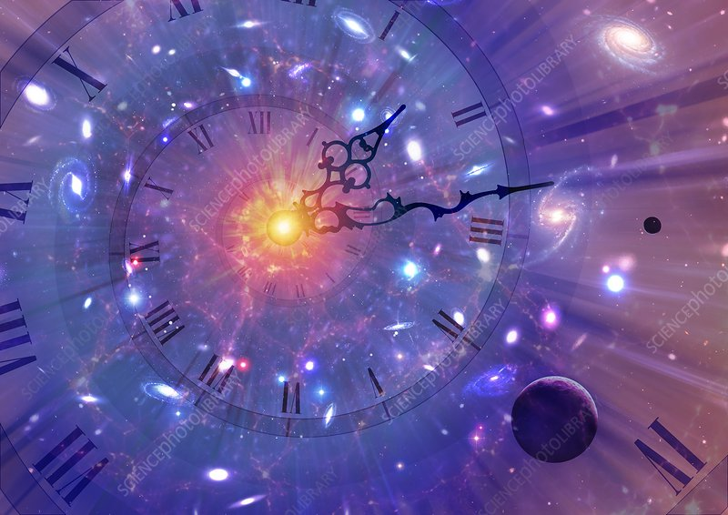

Time Dilation
Imagine two people, born at the exact same time, but one at the top of a mountain, and the other at a seashore. What differences would you expect between the two? A difference in physical features, perhaps? Maybe a difference in survival instincts? But, did you know that there would also be a difference in their respective ages? When Albert Einstein thought of the concept known as time dilation, he thought of something similar. He thought that when you look  at a clock tower while standing still, the clock seems to be ticking steadily, at its usual speed. However, he realized, if you travel at the speed of light in the opposite direction of the clock, the clock would appear frozen! And another interesting fact; we are all traveling at light speed all the time. Well, how are any of these things possible or related? Let's find out!
Before we get into that, let’s understand what relativity is. Relativity basically means 'from the perspective of something'. Let’s consider a man sitting on a bench, in a park. Now, consider another man, jogging around the track, in the same park. From the perspective of the stationary man, the jogger is moving. In other words, relative to the stationary man, the jogger is moving. However, from the perspective of the jogger, the stationary man is moving. In other words, relative to the jogger, the stationary man is moving. Another example is the Earth revolving around the Sun. According to the Sun, the Earth is moving, but according to the Earth and the people on the Earth (us), the Sun is moving (sunrise and sunset).
Time dilation is a phenomenon that basically means that someone moving faster through space will move slower through time. Imagine the clock tower situation again. From the perspective of the stationary man, the clock at the clock tower is ticking normally. However, if the person is in a tram, which is moving away from the clock at light speed, for the people on the tram, the clock would be stopped. That is because the light from the clock would never be able to reach the tram as the tram is moving at the same speed as the light from the clock (but with a head start). Therefore, relative to a stationary man, the clock is running perfectly fine, but for a person traveling at the speed of light, time has stopped. Therefore, for an object moving faster, time goes slower. This is also the reason you can’t move faster than light; as light moves through space, but for it time equals zero. For us, we move through space and time, and the total of that is equal to the speed of light. Therefore, you can’t move faster than light because you are already traveling at its speed.
You can see how time runs slowly if accelerating in the analogy below. Imagine a falling man holding a photon clock (two bars that bounce a photon back and forth where each bounce happens every second), and two men standing in a building (one at the top of a building and one on the middle floor). Because the clock, with the falling man, is falling as well, the photon in it will form triangles from the perspective of the men in the building (instead of just moving horizontally), meaning that the photons cover a larger distance. Therefore, as the person accelerates through space, the photon will take even longer distances and will hence, prove that time runs slower when the speed is higher.
According to Einstein, there is a fabric called spacetime, that consists of space and time. Bodies of high masses create a bend in this so-called ‘fabric’, and because it’s like a curved hole, it’s the deepest at the bottom. Think of a trampoline and a big, heavy, ball sitting in the middle of it. It will create a curve in the trampoline surface. Therefore, the acceleration near the bottom of that curve is the highest, and because the hole is the deepest when the body has the highest mass, time is the slowest when you are accelerating closer to the center of the body compared to farther away. For example, if you drop a ball from outside the atmosphere, time will slow down more when it is near the bottom than when it is at the top, because it accelerates to move at higher speeds closer to the bottom of the surface of the Earth. Therefore, people that live in higher altitudes age faster than people living closer to the Earth surface, although the difference is infinitesimal.
Image Credits: SciencePhoto
References
- Britannica, The Editors of Encyclopaedia. "time dilation". Encyclopedia Britannica, 16 Nov. 2022, https://www.britannica.com/science/time-dilation.
- May, Andrew. “What is time dilation?” LiveScience, 17 November 2021, https://www.livescience.com/what-is-time-dilation.
- “Time Dilation - Einstein's Theory Of Relativity Explained!” Youtube, uploaded by Science ABC, 13 April 2018, https://www.youtube.com/watch?v=yuD34tEpRFw.
- “Time Dilation Explained in 6 Minutes.” Youtube, uploaded by CosmoKnowledge, 20 February 2022, https://www.youtube.com/watch?v=g9p9AfjVMKY.
- “Time Dilation - Why an Accelerated Frame of Reference Slows Down Time.” Youtube, uploaded by But Why?, 17 October 2019, https://www.youtube.com/watch?v=nJkdUrBLm0w.